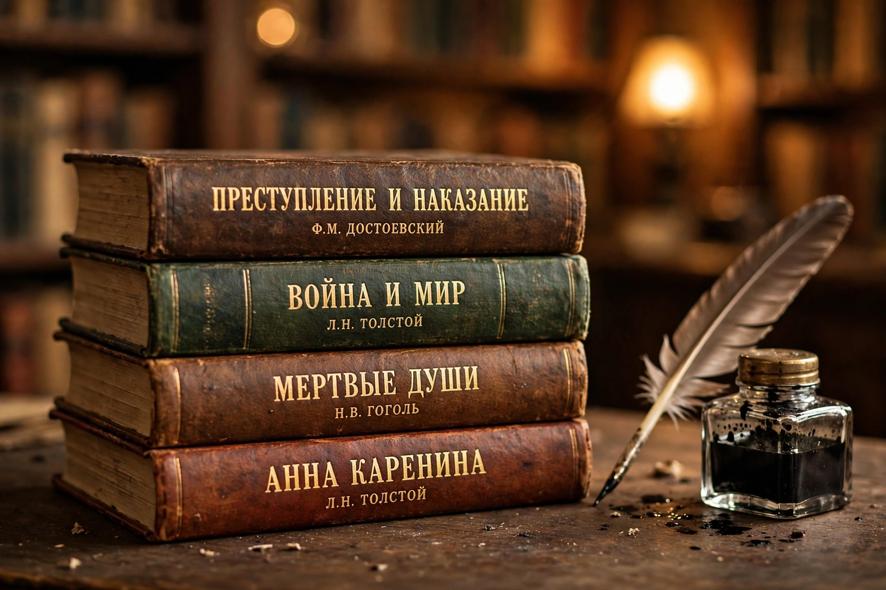

| Language | Russian |
|---|---|
| Golden Age | 19th century |
| Major figures | Pushkin, Gogol, Turgenev, Dostoevsky, Tolstoy, Chekhov |
| Nobel laureates | Bunin, Pasternak, Sholokhov, Solzhenitsyn, Brodsky |
Russian literature refers to the literature of Russia and its émigrés, and to Russian-language literature in general. Its roots lie in the Middle Ages, in the chronicles and religious writings of Kievan Rus' composed in Old East Slavic and Church Slavonic. In the 19th century Russia produced a flowering of poetry, drama, and especially the novel — the "Golden Age" — that has profoundly influenced world literature.
Medieval works include the Primary Chronicle, the epic The Tale of Igor's Campaign (12th century), saints' lives, and Archpriest Avvakum's defiant autobiography (1670s), a landmark of early vernacular prose. Peter the Great's reforms and the secularisation of the 18th century brought new forms under writers such as Lomonosov, Derzhavin, and Karamzin.
Alexander Pushkin (1799–1837) is regarded as the founder of modern Russian literature; his verse novel Eugene Onegin and prose works set the standard for the language. His near-contemporaries include Mikhail Lermontov and Nikolai Gogol, whose Dead Souls and short stories founded the realist tradition.
The later 19th century saw an extraordinary sequence of novels: Ivan Turgenev's Fathers and Sons, Fyodor Dostoevsky's Crime and Punishment and The Brothers Karamazov, and Leo Tolstoy's War and Peace and Anna Karenina, works noted for psychological depth and philosophical scope. Anton Chekhov transformed both the short story and drama with plays such as The Cherry Orchard.
The turn of the 20th century brought modernism — Symbolists such as Blok, Acmeists such as Akhmatova and Mandelstam, and Futurists such as Mayakovsky. After 1917, literature split between official Soviet writing, governed after 1934 by socialist realism, and dissident or émigré work: Bulgakov's suppressed The Master and Margarita, Pasternak's Doctor Zhivago, and Solzhenitsyn's exposés of the Gulag. The samizdat circulation of banned works became a defining feature of late Soviet culture.
Since 1991 Russian literature has diversified, with internationally known writers including Lyudmila Ulitskaya, Victor Pelevin, and Boris Akunin, alongside a revived interest in the classics and émigré canon.
From Wikipedia, the free encyclopedia. Recreated article.